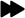

<html>
<head>
  <meta charset=utf-8 />
  <title>Ebola Crisis in Western Africa</title>
  <meta name='viewport' content='initial-scale=1,maximum-scale=1,user-scalable=no' />

  <!-- Load Leaflet from CDN-->
<link rel="stylesheet" href="https://unpkg.com/leaflet@1.0.3/dist/leaflet.css" />
<script src="https://unpkg.com/leaflet@1.0.3/dist/leaflet.js"></script>

<link rel="stylesheet" type="text/css" href="css\main.css" />

  <!-- Load Esri Leaflet from CDN -->
  <script src="https://unpkg.com/esri-leaflet@2.0.7"></script>
  
  <script src="http://code.jquery.com/jquery-1.11.3.min.js"></script>
  <!--<script src="http://leaflet.ajax.min"type=text/javascript"></script>-->
  <script type="text/javascript" src="lib/main.js"></script>

<!-- script src="http://cdn.leafletjs.com/leaflet-0.7.3/leaflet.js"></script>
<script src="http://code.jquery.com/jquery-1.11.3.min.js"></script> -->


  <style>
    body { margin:0; padding:0; }
    #map {
    height: 600px;
    width: 80%;
    display: inline-block;
}
.sequence-control-container {
    width: 350px;
    height: 30px;
    background-color: rgba(255,255,255,0.8);
    padding: 10px;
    line-height: 45px;
    text-align: center;
    border: solid gray 1px;
}

.range-slider {
    width: 200px;
}
#panel {
    width: 16%;
    padding: 20px;
    display: inline-block;
    vertical-align: top;
}
#forward {
    float: right;
	width: 25px;
}

#reverse {
    float: left;
	width: 25px;
}

.legend {
    line-height: 18px;
    color: #555;
}
.legend i {
    width: 18px;
    height: 18px;
    float: left;
    margin-right: 8px;
    opacity: 0.7;
}
  </style>
  
</head>
<body>

        <div id="map"></div>
		<div id="panel"></div>
		
		
		
		<script src="js/leaflet-search.min.js"></script>
		<script src="jsLayers/qgis2web_expressions.js"></script>
        <script src="jsLayers/leaflet.js"></script>
        <script src="jsLayers/leaflet-heat.js"></script>
        <script src="jsLayers/leaflet.rotatedMarker.js"></script>
        <script src="jsLayers/OSMBuildings-Leaflet.js"></script>
        <script src="jsLayers/leaflet-hash.js"></script>
        <script src="jsLayers/Autolinker.min.js"></script>
        <script src="jsLayers/leaflet.markercluster.js"></script>


<script>
/* Example from Leaflet Quick Start Guide*/
var map = L.map('map', {
    center: L.latLng(8.465677, -13.231722),
    zoom: 6
});

//add tile layer...replace project id and accessToken with your own
L.tileLayer('http://{s}.tiles.wmflabs.org/bw-mapnik/{z}/{x}/{y}.png', {
    attribution: '&copy; <a href="http://osm.org/copyright">OpenStreetMap</a> contributors'
}).addTo(map); 
 
 var legend = null;
 
 function createLegend(map, attribute){
    var LegendControl = L.Control.extend({
        options: {
            position: 'bottomleft'
        },

        onAdd: function (map) {
            // create the control container with a particular class name
            //var container = L.DomUtil.create('div', 'legend-control-container');

			var div = L.DomUtil.create('div', 'info legend'),
			grades = [0, 10, 50, 100, 500, 1000, 2000],
			labels = [];
			
			div.innerHTML += '<h4>' + attribute + '</h4>';

			// loop through our density intervals and generate a label with a colored square for each interval
			for (var i = 0; i < grades.length; i++) {
				div.innerHTML +=
					'<i style="background:' + getColor(grades[i] + 1) + '"></i> ' +
					grades[i] + (grades[i + 1] ? '&ndash;' + grades[i + 1] + '<br>' : '+');
			}

			return div;


			//legend.addTo(map);

            //return container;
        }
    });
	
	if(legend != null) {
		map.removeControl(legend);
	}
	legend = new LegendControl();
    map.addControl(legend);
};
/*var legend = L.control({position: 'bottomleft'});

legend.onAdd = function (map) {

    var div = L.DomUtil.create('div', 'info legend'),
        grades = [0, 10, 50, 100, 500, 1000, 2000],
        labels = [];

    // loop through our density intervals and generate a label with a colored square for each interval
    for (var i = 0; i < grades.length; i++) {
        div.innerHTML +=
            '<i style="background:' + getColor(grades[i] + 1) + '"></i> ' +
            grades[i] + (grades[i + 1] ? '&ndash;' + grades[i + 1] + '<br>' : '+');
    }

    return div;
};

legend.addTo(map);*/

//function createSequenceControls(map, attributes){   
    //var SequenceControl = L.Control.extend({
       // options: {
          //  position: 'bottomright'
        //},
		//onAdd: function (map) {
            // create the control container div with a particular class name
            //var container = L.DomUtil.create('div', 'sequence-control-container');

            //create range input element (slider)
            //$(container).append('<input class="range-slider" type="range">');

            //return container;
       // }
   // });

  //  map.addControl(new SequenceControl());

function onEachFeature(feature, layer) {
	//no property named popupContent; instead, create html string with all properties
	//var popupContent = "";
	//if (feature.properties) {
		//loop to add feature property names and values to html string
	//	for (var property in feature.properties){
	//		popupContent += "<p>" + property + ": " + feature.properties[property] + "</p>";
	//	}
	//	layer.bindPopup(popupContent);
	//};
	
	layer.bindPopup(L.Util.template('<b>District</b>: {District}<br> <b>Confirmed Cases</b>: {Jan_2015}', feature.properties));

    //event listeners to open popup on hover
    layer.on({
        mouseover: function(){
            this.openPopup();
        },
        mouseout: function(){
            this.closePopup();
        },
        click: function(){
            $("#panel").html(L.Util.template('<b>District</b>: {District}<br> <b>Confirmed Cases</b>: {Jan_2015}', feature.properties));
        }
    });
	
};
function getColor(Jan_2015) {
    return Jan_2015 == 0    ? '#FFFFE5' :
           Jan_2015 < 10   ? '#FED976' :
           Jan_2015 < 50   ? '#FEB24C' :
           Jan_2015 < 100  ? '#FD8D3C' :
           Jan_2015 < 500  ? '#FC4E2A' :
           Jan_2015 < 1000 ? '#E31A1C' :
           Jan_2015 < 2000 ? '#BD0026' :
           Jan_2015 > 2001 ? '#800026' :
							'#8B0000';
}
function style(attribute) {
    return {
        fillColor: getColor(attribute),
        weight: 1.5,
        opacity: 1,
        color: 'white',
        //dashArray: '3',
        fillOpacity: 0.7
    };
}
function highlight(feature, layer) {
    layer.on({
        mouseover: highlightFeature,
        mouseout: resetHighlight,
        click: zoomToFeature
    });
}

function createSequenceControls(map){

    //create range input element (slider)
    $('#panel').append('<input class="range-slider" type="range">');
	$('.skip').click(function(){
        //sequence
    });

    //Step 5: input listener for slider
    $('.range-slider').on('input', function(){
        //sequence
		var index = $('.range-slider').val();
		//Step 6: increment or decrement depending on button clicked
        if ($(this).attr('id') == 'forward'){
            index++;
            //Step 7: if past the last attribute, wrap around to first attribute
            index = index > 9 ? 0 : index;
        } else if ($(this).attr('id') == 'reverse'){
            index--;
            //Step 7: if past the first attribute, wrap around to last attribute
            index = index < 0 ? 9 : index;
        };

        //Step 8: update slider
        $('.range-slider').val(index);
		function updatePolygons(map, attribute){
		map.eachLayer(function(response){
        if (response.feature && response.feature.properties[attribute]){
            //update the layer style and popup
        };
    });
};
    });
};
	$('.range-slider').attr({
			max: 8,
			min: 0,
			value: 0,
			step: 1
		});
	$('#panel').append('<button class="skip" id="reverse">Reverse</button>');
	$('#panel').append('<button class="skip" id="forward">Skip</button>');
	$('#reverse').click(function() {
		alert("You clicked!");
	});
	$('#forward').click(function() {
		alert("Please stop clicking!");
	});
	
	$('#panel').append('<input class="range-slider" onchange="updateSlider(this.value)" type="range">');


    //set slider attributes
    $('.range-slider').attr({
        max: 8,
        min: 0,
        value: 0,
        step: 1
    });
	
	$('#reverse').html('');
    $('#forward').html('');
	//Initialize polys on map onLoad
	
	
	updateSlider(0);

function processData(response){
    //empty array to hold attributes
    var attributes = [];

    //properties of the first feature in the dataset
    var properties = response.features[0].properties;

    //push each attribute name into attributes array
    for (var attribute in properties){
        //only take attributes with population values
        if (attribute.indexOf("_20") > -1){
            attributes.push(attribute);
        };
    };

    //check result
    console.log(attributes);

    return attributes;
};
var countryStyle = {
    "color": "#000000",
    "weight": 1.5,
    "opacity": 5
};

//var searchLayer = L.layerGroup().addTo(map);
//... adding data in searchLayer ...
//map.addControl( new L.Control.Search({response: searchLayer}) );

var guineaLayer = L.layerGroup().addTo(map);
var sierraLeoneLayer = L.layerGroup().addTo(map);
var liberiaLayer = L.layerGroup().addTo(map);

	function updateSlider(sliderValue){
	
	    $.ajax("data/geoJSON/guinea_ebola.geojson", {
        dataType: "json",
        success: function(response){
			map.removeLayer(guineaLayer);
		
			 var attributes = processData(response);
			createLegend(map, attributes[sliderValue]);
			 console.log(response);
            //create a Leaflet GeoJSON layer and add it to the map
            guineaLayer = L.geoJson(response, {
						onEachFeature: onEachFeature, 
			style: function(feature){
				return style(feature.properties[attributes[sliderValue]]);
			} 
			}).addTo(map);	
        }
    });


	    $.ajax("data/geoJSON/sierraleone_ebola.geojson", {
        dataType: "json",
        success: function(response){
			map.removeLayer(sierraLeoneLayer);
		
			 var attributes = processData(response);
			createLegend(map, attributes[sliderValue]);
			 console.log(response);
            //create a Leaflet GeoJSON layer and add it to the map
            sierraLeoneLayer = L.geoJson(response, {
						onEachFeature: onEachFeature, 
			style: function(feature){
				return style(feature.properties[attributes[sliderValue]]);
			} 
			}).addTo(map);	
        }
    });

	    $.ajax("data/geoJSON/liberia_ebola.geojson", {
        dataType: "json",
        success: function(response){
			map.removeLayer(liberiaLayer);
		
			 var attributes = processData(response);
			createLegend(map, attributes[sliderValue]);
			 console.log(response);
            //create a Leaflet GeoJSON layer and add it to the map
            liberiaLayer = L.geoJson(response, {
						onEachFeature: onEachFeature, 
			style: function(feature){
				return style(feature.properties[attributes[sliderValue]]);
			} 
			}).addTo(map);	
        }
    });
};
    //$.ajax("data/geoJSON/liberia_admin0.geojson", {
       // dataType: "json",
        //success: function(response){
            //create a Leaflet GeoJSON layer and add it to the map
           // L.geoJson(response, {style: countryStyle}).addTo(map);
			
       // }
    //});
   //$.ajax("data/geoJSON/sierraleone_admin0.geojson", {
        //dataType: "json",
       // success: function(response){
            //create a Leaflet GeoJSON layer and add it to the map
           // L.geoJson(response, {style: countryStyle}).addTo(map);
			
        //}
    //});
    //$.ajax("data/geoJSON/guinea_admin0.geojson", {
        //dataType: "json",
        //success: function(response){
            //create a Leaflet GeoJSON layer and add it to the map
           //L.geoJson(response, {style: countryStyle}).addTo(map);
			
       // }
  //  });


</script>

</body>
</html>